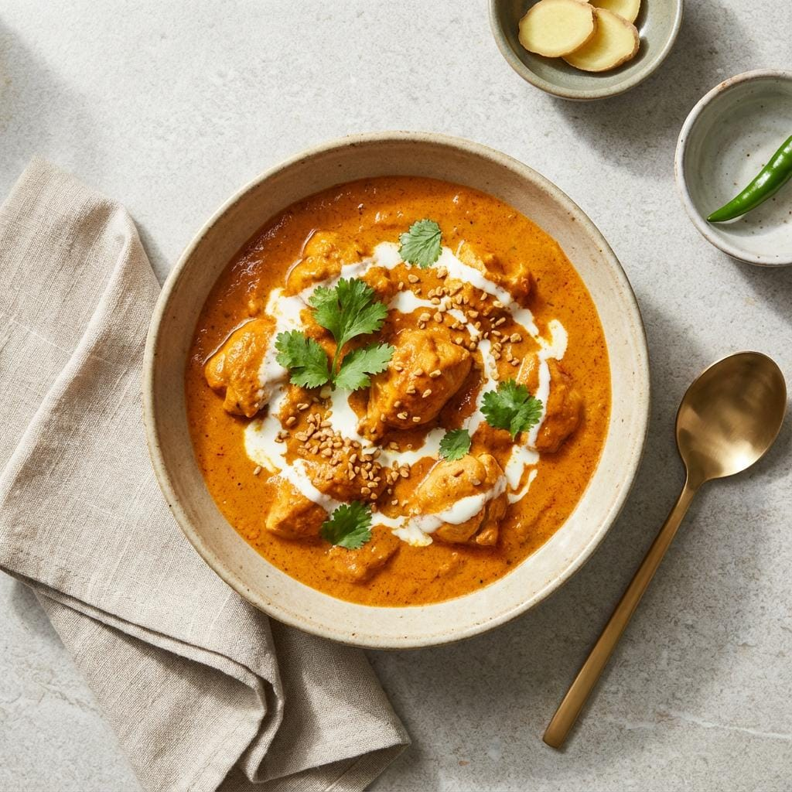
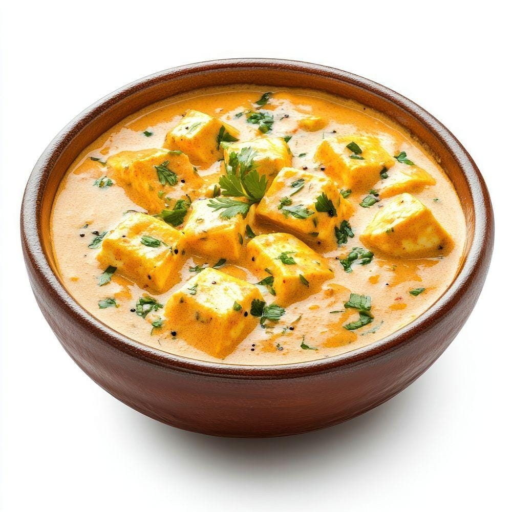
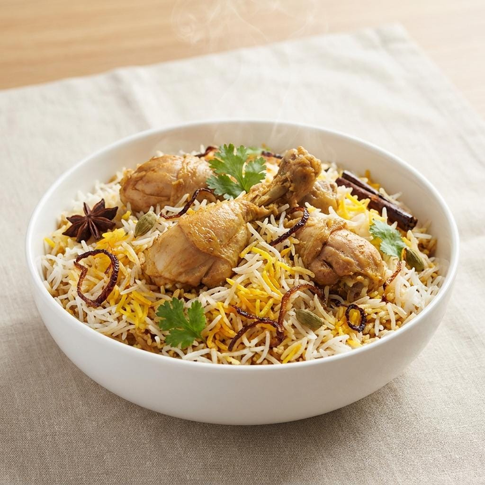
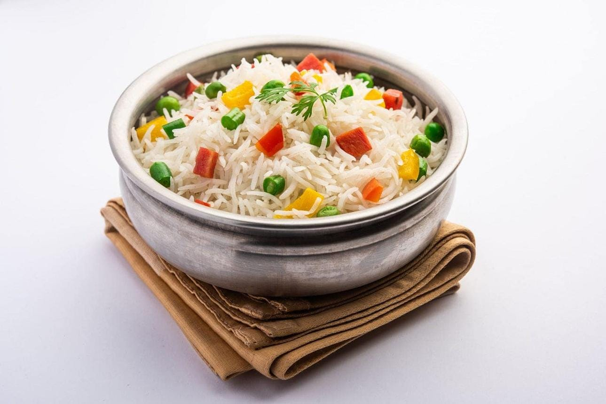

Discover some of the most loved Indian dishes made with rich flavours, aromatic spices, and authentic ingredients.

A rich and creamy North Indian curry made with tender chicken, butter, tomatoes, and aromatic spices.

A delicious royal paneer dish cooked in a creamy tomato and nut-based gravy with mild and fragrant spices.

A flavourful rice dish layered with spices, herbs, and vegetables or meat, loved for its rich aroma and taste.

A light and aromatic rice dish made with fresh vegetables and whole spices, perfect for everyday meals.